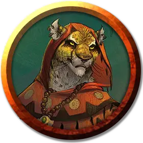

К’Тулах
K’Tulah
Средний Гуманоид (Табакси), нейтрально-добрый, именной НИП

Класс Доспеха 11 (16 с дубовой корой)
Хиты 27 (5к8 + 5)
Скорость 30 футов
| мод | спас | ||
|---|---|---|---|
| СИЛ | 10 | +0 | +0 |
| ЛОВ | 12 | +1 | +1 |
| ТЕЛ | 13 | +1 | +1 |
| мод | спас | ||
|---|---|---|---|
| ИНТ | 12 | +1 | +1 |
| МДР | 15 | +2 | +2 |
| ХАР | 11 | +0 | +0 |
Навыки Восприятие +4, Медицина +4, Природа +3
Чувства тёмное зрение 60 футов, пассивное Восприятие 14
Языки Общий, Друидический
Опасность 2 (450 опыта)
Бонус мастерства +2
Особенности
Кошачье проворство. Когда К’Тулах перемещается в бою в свой ход, она может удвоить свою скорость до конца хода. Использовав эту особенность, она не можете использовать её снова, до тех пор пока вы не переместитесь на 0 футов в один из своих ходов.
Использование заклинаний. К’Тулах является заклинателем 4-го уровня. Его базовой характеристикой является Мудрость (Сл спасброска от заклинания 12, +4 к попаданию атаками заклинаниями). У неё подготовлены следующие заклинания друида:
• Заговоры (неограниченно): дубинка, искусство друидов, сотворение пламени
• 1 уровень (4 ячейки): волна грома, опутывание, разговор с животными, скороход
• 2 уровень (3 ячейки): дубовая кора, почтовое животное
Черта характера. "Я говорю быстро и могу поддержать разговоры почти о чем угодно."
Идеал. "Приличия переоценены. Жизнь слишком коротка для формальностей."
Привязанность. "Тщательно проведенные мною в течение последних десяти лет исследования - моя гордость и радость."
Слабость. "Мне не нравится чувствовать себя как в ловушке."
Действия
Боевой посох. Рукопашная атака оружием: +2 к попаданию (+4 к попаданию с дубинкой), досягаемость 5 футов, одна цель. Попадание: Дробящий урон 3 (1к6), или дробящий урон 6 (1к8) с дубинкой или при использовании двумя руками.
Когти. Рукопашная атака оружием: +2 к попаданию, досягаемость 5 футов, одна цель. Попадание: 2 (1к4) рубящего урона.
Описание
К’Тулах - общительная табакси, похожий на кошку гуманоид. Она прибыла в Крепость Свечей шесть дней назад и получила разрешение на использование библиотеки для проведения своих исследований о региональных проявлениях магии народов.
Табакси оживленная болтушка с чрезмерной жестикуляцией во время разговора, что раздражают Варнир, но эльфийка ценит ее академический опыт.
Друиды живут в лесах и других уединённых местах в дикой местности, где занимаются защитой природы от чудовищ и вторжения цивилизации. Некоторые из них являются шаманами племени, лечащими больных, молящимися духам животных и дающими духовное руководство.